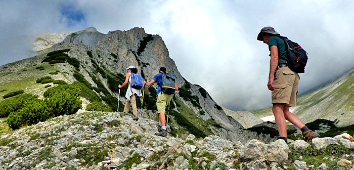

For travelers who enjoy outdoor activities and adventure, Bulgaria offers a wide variety of exciting experiences. The country’s diverse landscapes make it an ideal destination for activities such as hiking, rafting, climbing, and paragliding.
Hiking is one of the most popular adventure activities in Bulgaria. The country’s mountains offer numerous trails that lead through forests, valleys, and scenic viewpoints. Popular routes include hikes to the Seven Rila Lakes and trails within the Pirin and Balkan mountain ranges.
Water sports are also available in many regions. Rivers such as the Struma and Iskar provide opportunities for rafting and kayaking. These activities allow visitors to experience the natural beauty of Bulgaria while enjoying an exciting adventure.
Paragliding and rock climbing are also becoming increasingly popular among tourists. Many mountain areas provide excellent conditions for these sports and offer stunning views of the surrounding landscapes.